基本情報
| タイトル | DomiDomiDomino |
|---|---|
| 開発・販売 | GenGorouGames |
| ジャンル | 協力ドミノ立てアクション |
| プレイ人数 | 1〜4人（オンライン協力。ソロでも最後まで遊べます） |
| 対応機種 | PC (Steam / Windows) |
| 発売日 | 未定 |
| 価格 | 500円 |
| 対応言語 | 日本語 / 英語 / 韓国語 / 中国語（簡体字） |
| 操作 | キーボードとマウス |
| 内容 | 全6ラウンド（目標 10 → 30 → 50 → 100 → 250 → 500個）／強化・アイテム 18種類／実績 16個／着せ替え 16個 |
| Steam | ストアページ準備中 |
| 連絡先 | gengorougames@gmail.com |
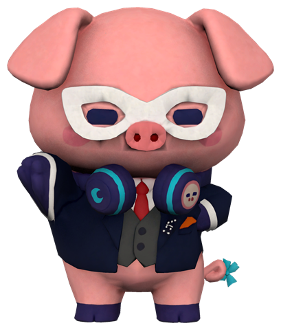
ゲームの説明
記事や概要欄に、そのまま写して使えます。
一言で
急ぎたいのに、あわてると倒す。1〜4人で立てて、最後にみんなで倒す協力ドミノアクション。
短い説明
1〜4人で協力してドミノを立て、最後にみんなで倒す！ 急ぎたいのに、あわてると倒してしまう――うっかり事故で大さわぎ。コインで強化して、数百個の大連鎖をめざせ。ソロでも遊べる協力ドミノアクション。
長い説明
『DomiDomiDomino』は、おもちゃの作業員になって子ども部屋にドミノを並べる、1〜4人の協力アクションです。司令官「げんちゃん」がテレビから出す目標の数だけドミノを立て、スタートの1個を殴れば、あとは倒れていくのを眺めるだけ。
ドミノは1個1個が物理で動きます。早く終わらせるほどコインは増えますが、雑に置けば倒れ、走ればぶつかり、ふざければ味方が列に突っ込みます。倒れた分は立て直し。失うのは時間だけ――だから余計にあせります。
かせいだコインで買える強化は、どれもリスクつき。たくさん持てる「義手」は落とせばその数だけ倒れ、コインが3倍の金色ドミノはとにかく倒れやすい。目標は10個から500個へ増え、クリアするたびに部屋が広がり、高台・橋・坂を越える立体のコースになっていきます。最後は数百個のドミノが、夜の部屋じゅうを駆け抜けます。
特徴
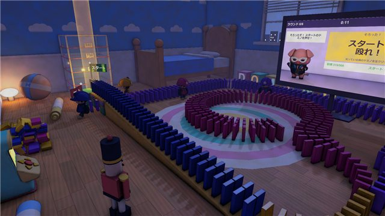
1〜4人のオンライン協力。フレンドと参加コードで合流。ソロでも最後まで遊べます。
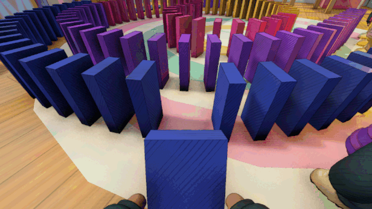
1個1個が物理で動くドミノ。手の震えも、置く速さも、そのまま結果に出ます。
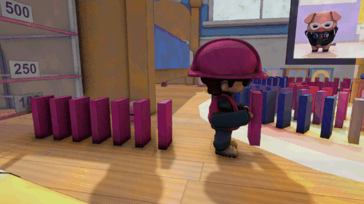
急ぐほどかせげる。あわてるほど倒す。事故で失うのは時間だけ。だから笑えて、あせります。
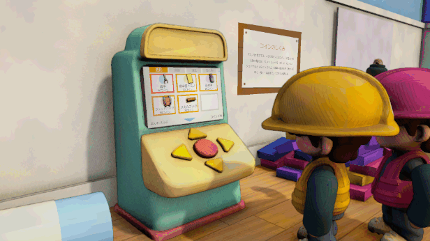
リスクつきの強化とアイテム 18種類。義手・自動化マシン・金色ドミノ・ジェットパック・並べてくれるロボット ほか。
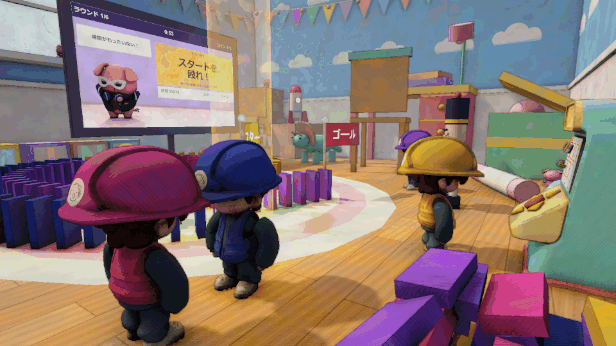
殴る・投げる・持ち上げる・エモート。味方と好きなだけふざけられます。
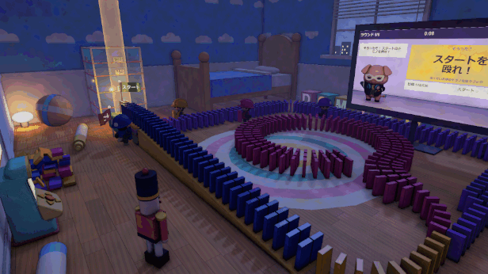
広がる部屋と立体のコース。坂・階段・橋・高台を自分たちで置いて、コースを組み替えられます。
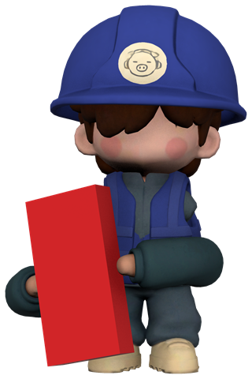
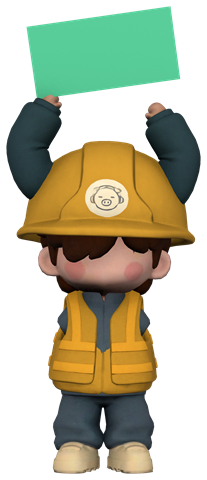
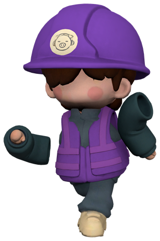
実績で増える着せ替え。かぶり物・体の柄・手袋・ドミノの柄。
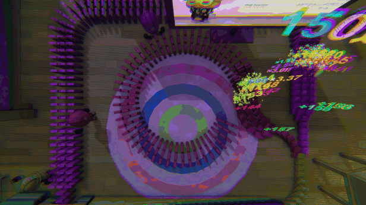
昼から夜へ、最後は500個の大連鎖。全員で立てたドミノが倒れていくのを、みんなで眺めます。
トレーラー
約66秒・1920×1080。字幕なし、音はゲームの音だけです。 MP4 をダウンロード
スクリーンショット
1920×1080 の PNG。クリックで元の大きさを開きます。最後の3枚は実際の遊ぶ画面です。 まとめてダウンロード (ZIP)
GIF
ロゴ・キーアート
ロゴとアイコンは背景が透明の PNG です。 まとめてダウンロード (ZIP)

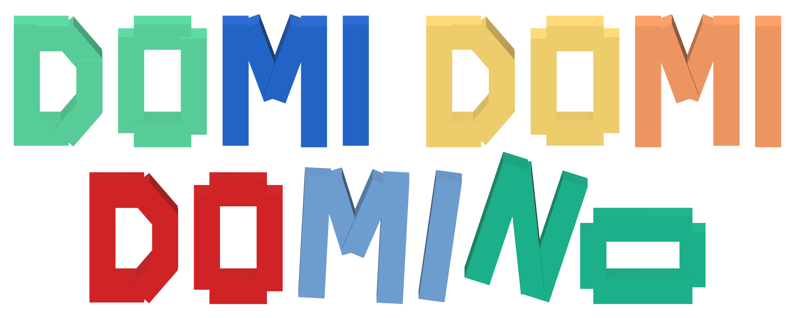

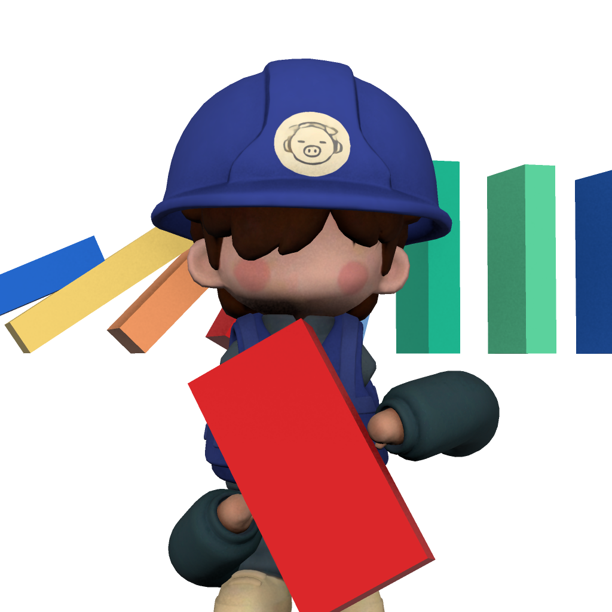

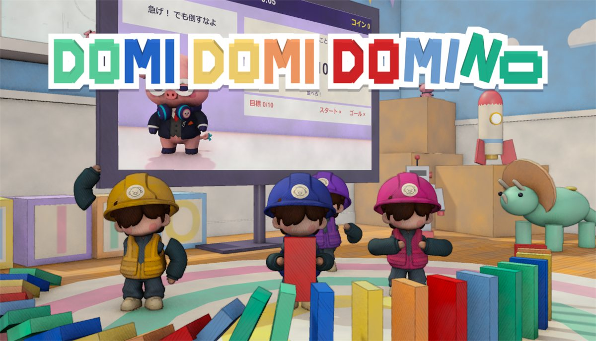

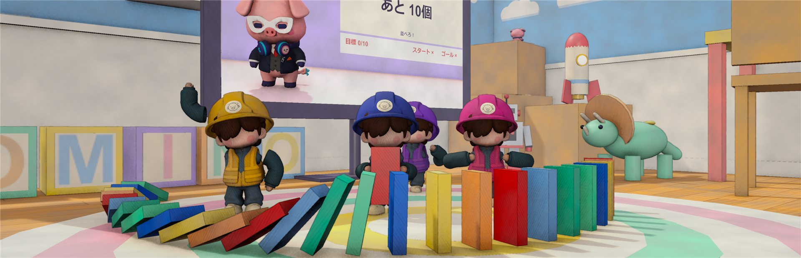

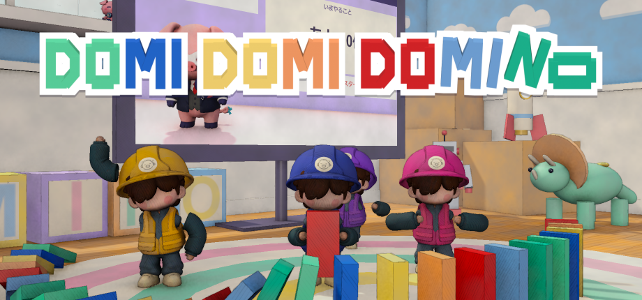

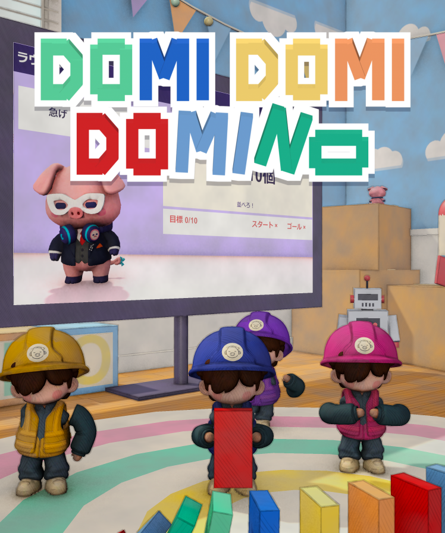

ロゴの色
ロゴは3Dのドミノを組んで作ってあり、フォントではありません。
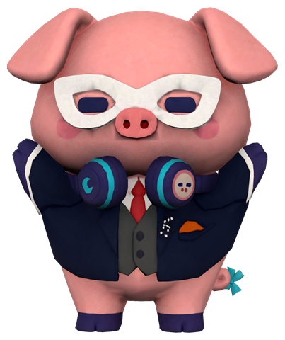
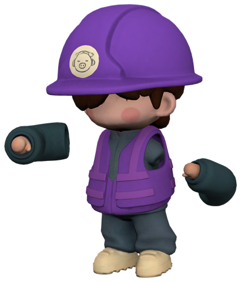
配信ガイドライン
- 『DomiDomiDomino』の配信・実況・動画投稿・切り抜きは、個人でも法人でも、連絡なしで行えます。
- YouTube・Twitch などの各サービスの収益化の機能（広告・投げ銭・メンバーシップなど）を使えます。
- このページの画像・ロゴ・トレーラーは、サムネイルや動画の中で自由に使えます。
- ゲームの音楽と効果音に、既存の楽曲や他社の音源は使っていません。Content ID などにも登録していません。
- お願い: 概要欄にゲーム名と Steam のストアページの URL を入れてもらえると助かります。
- お願い: 最後のラウンドのあとの展開は、タイトルとサムネイルでは伏せてください（動画の中身は自由です）。
- 禁止: ゲームの素材そのものを切り出して配る・売ること、公序良俗に反する使い方。
収益化できるかどうかは、各サービスの規約と審査にも従います。この許可はそれを変えるものではありません。
配信の見どころ
- うっかり事故。走ってぶつかる、手がすべる、味方を殴って列に突っ込ませる。
- 味方を持ち上げて投げる。いつでもできます。投げた先のドミノは全部倒れます。
- リスクつきの買い物。強くなるほど、事故も大きくなります。
- 最後の大連鎖。全員で立てた数百個が倒れていくのを、みんなで眺める時間。
- コラボ向き。2〜4人で遊ぶと事故が増えます。ソロでも遊べ、途中から「つづきから」も選べます。
操作の早見
| W A S D | 移動（Shift ダッシュ / Space ジャンプ） |
|---|---|
| C / Ctrl | しゃがむ / 伏せる（ゆっくり丁寧に動ける） |
| 右クリック | ドミノを取る。長押しで下ろして置く |
| 左クリック | 殴る。ドミノを持っていれば長押しで投げる |
| F | 拾う。長押しで立っているドミノを持ち上げる |
| ホイール / 1〜9 | アイテムを選ぶ |
| ホイール長押し | エモート |
| Esc | 設定 |
キー（製品コード）の申し込み
メディア・配信者の方にキーをお渡ししています。チャンネルや媒体の URL を添えて、下のメールアドレスまでご連絡ください。
開発者
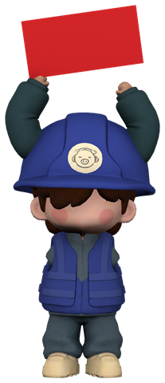
GenGorou
GenGorouGames
DomiDomiDomino は、GenGorou が1人で開発しています。
連絡先
| メール | gengorougames@gmail.com |
|---|---|
| X | @gengorou__game |
| Steam | ストアページ準備中 |